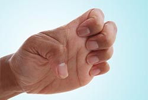

Claw Stretch

This stretch helps improve the range of motion in your fingers.
• Hold your hand out in front of you, palm facing you.
• Bend your fingertips down to touch the base of each finger joint. Your hand should look a little like a claw.
• Hold for 30 to 60 seconds and release. Repeat at least four times on each hand.